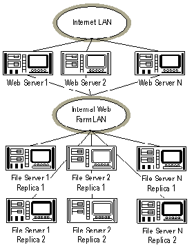
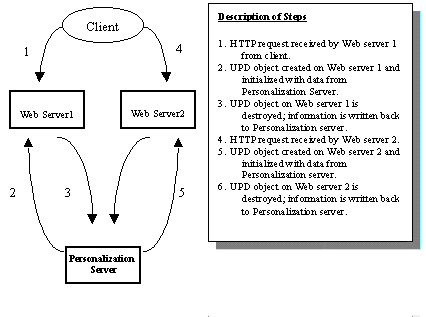

|
| ||
|
| ||
Dennis Angeline
Principal Consultant,
Microsoft Consulting Services
March 11, 1998
Contents
Background
Maintaining State with Cookies
Managing Session State Across Multiple
Servers
Building
Stateless Web Applications
Managing
Session State on the Client
Session-Aware Load Balancing
Centralized State Management
Conclusion
When users surf the Internet using a Web browser, they are usually pleasantly unaware of the details of the Hypertext Transport Protocol that makes it all possible. HTTP is a connectionless specification for how a Web browser communicates with a Web server. While connectionless protocols have a number of advantages, they do present a problem when it comes to maintaining information (or "state") about users visiting a Web site.
From the perspective of the Web server, each HTTP request appears as though it is a separate and distinct request, unrelated to any previous requests. That means that the information a user enters on one page (through a form, for example) is not automatically available on the next page requested, unless the Web server takes steps to make that happen. The challenge, of course, is to somehow identify which requests, out of the thousands of requests received by the Web server, come from the same user. One way is to use cookies.
A cookie is a piece of information that the client stores on behalf of the server. In this case, the information stored in the cookie originates at the server, and is returned to the client as part of the server's response to an HTTP request. A client may have many cookies stored at any given time, and each cookie may be associated with a particular Web site (or page). Each time the client visits that site, the browser packages the cookie with the HTTP request. The Web server can then use the information in the cookie to identify the user, and, depending on the nature of the information collected, possibly personalize the appearance of the Web page. It can also add or change the information within the cookie before returning it.
All cookies have an expiration date. If a cookie's expiration date is explicitly set to sometime in the future, the browser will automatically save the cookie to the client's disk. Cookies that do not have an explicit expiration date are only good for the life of the browser session; as soon as the browser is closed, the cookie is erased from the computer's memory.
Because a cookie is sent back to the server with each new request, cookies are an ideal way to identify a series of requests that come from the same user. When a request is received from a known user, the unique identifier can be extracted from the cookie and used to retrieve additional user information, which is often more sensitive or private, from a database. That way, the user's private data is kept safely on the server, and not in the cookie where it could be hacked. The cookie only contains the key to the private data stored on the server. When a request is received with no cookie, or with a cookie that does not contain the necessary identifier, the request is assumed to be from a new user. In that case, a new identifier is generated before the response is sent back to the client, and a new record added to the server's user database.
A typical Web server maintains information about the users that visit the site in its user database. This may be personalization information that remains fairly constant over time, such as the user's name or e-mail address, or it may be information that has a very short lifetime, such as the number of items that have been purchased during the current visit.
In Internet terminology, the word "session" refers to the time during which a specific user is actively viewing the contents of a Web site. A session starts when the user visits the first page on the site, and ends when they leave the site. A site can also be explicitly abandoned by an application running at the Web site. The pieces of user-specific information relevant to a particular session are collectively known as the "session state." Some kind of cookie technique is often used to identify which requests are part of the same user session. (Note: Each browser that a user opens will establish a new session that uniquely identifies not only the user and the browser instance).
Microsoft® Internet Information Server (IIS) provides a built-in mechanism for managing session state. The IIS Session object uses the cookie technique described above to monitor session state. How it works is hidden from Web developers, allowing them to focus on content development rather than the details of maintaining session state.
In a Web farm, two or more servers are used to host the same site. Multiple servers often become necessary when a site attracts a larger number of users. HTTP requests are usually routed to each server in a round-robin fashion, to distribute load and allow the site to handle more requests.
While the IIS Session object works well in a single-Web-server environment, it is not very useful in a Web farm because it tracks information solely in the Web server that handles the request. As additional requests are routed to other servers in the farm, information stored during the first request is not available because it resides in another server. This is especially problematic when a single-server site using the Session object grows to a multi-server Web farm. There are four ways to address the problem of session management in a Web farm:
We'll discuss each of these solutions in turn.
Stateless applications have no notion of state built into them. They handle every request as though it came from a different and distinct user. This type of application is ideally suited to the stateless HTTP protocol. Not all applications fit nicely into the stateless model, but there are some significant advantages to building Web applications this way. For starters, stateless applications scale and distribute extremely well. Because each transaction can be considered separate and distinct, a particular transaction is free to execute on any available server. This allows additional computing resources to be freely added as the demand increases. A discussion of building stateless applications is beyond the scope of this article. For further information, see Design Strategies for Scalable Active Server Applications by Steve Kirk in the September 2, 1997 issue of Microsoft Developer Network News.
If state information can't be maintained on the Web server, a common alternative is to maintain state on the client. This approach is appealing because it shifts the storage burden from the server to the client. That way, the server is not responsible for devoting potentially large amounts of storage to users that may never return. From the perspective of the server, the application appears to be stateless, and thus inherits all the advantages of a stateless application (namely scalability).
The disadvantages of maintaining state on the client are the security and size limitations it presents. Because state is stored in a known location, the information therein can potentially be sniffed or stolen by another application. (In reality, the information is usually not worth stealing and, when it is, can easily be encrypted.) A more significant problem is the size limitation. The maximum allowable size of a cookie varies with different browsers, but all browsers support cookies of at least 4,096 bytes.
With IIS, cookies can be accessed through the Request and Response objects. Both contain a cookies collection. The Request object cookie collection contains a read-only list of the names and values of all cookies sent to the server as part of the current request. For example, to get the EMailAddress cookie out of the incoming cookie collection (assuming it was stored as part of a previous response), you could use the following Active Server Page script:
Email = Request.Cookies("EmailAddress")
To add or change the EmailAddress cookie, set the value in the Response object's cookie collection:
Response.Cookies("EmailAddress") = dennis@microsoft.com
If the EMailAddress cookie already exits in the response's cookie collection, the above statement will change the cookie's value. If a cookie with the name EmailAddress did not already exist, a new cookie will be created.
The cookies collection can also support keys, or what some people call sub-cookies. For example, a list of a user's favorite links could be stored in a client-side cookie using the following ASP script:
Response.Cookies("Link")("1") =
"www.microsoft.com"
Response.Cookies("Link")("2") = "www.intel.com"
Response.Cookies("Link")("3") = "www.discovery.com"
Internet Explorer will not write a cookie to disk unless you explicitly specify an expiration date. You set a cookie's expiration date using the Expires property:
Response.Cookies("EmailAddress") = dennis@microsoft.com
Response.Cookies("EmailAddress").Expires = "June 1, 1999"
Supplying an expiration date causes the browser to save the cookie on the client computer. Once the cookie is written to disk, the cookie will be offered back to the server as part of any HTTP request to the same host until it expires. If an expiration date is not specified, the cookie lives only for that browser session. Once the user exits the browser, the cookie is gone.
Cookies also have Path and Domain properties. If a cookie's domain is unspecified, the domain portion of the requested URL is used. The cookie is then offered along with any future HTTP request on that domain. By setting the Domain property to something other than the default, a cookie can be created in one domain, and offered along with HTTP requests on another.
If Path is unspecified, the path to the current ASP application is used. On a large Web site, where different developers are responsible for different areas, it is difficult to share the same cookie namespaces across all content areas. By setting the cookie path to a specific area within a site, the namespace can be narrowed.
For example, a company may have two separate sites, one for marketing and one for research. The marketing Web located at www.someones53company.com/marketing may use a cookie called Count to track the number of products a visitor is interested in receiving e-mail about. The research Web, located at www.someones53company.com/research, may also use a cookie called Count to track the number of products the user has researched. Both cookies are called Count, but are independent. (Please read this disclaimer about fictitious site URLs.) Because they share a common cookie namespace, the marketing cookie would overwrite the research cookie each time the user visited the marketing Web, and vice versa.
To solve this problem, use the Path property. By setting the cookie path, you tell the browser that the cookie should only be offered along with HTTP requests on that path.
' on the marketing Web
Response.Cookies("Count") = 5
Response.Cookies("Count").Expires = "June 1, 1999"
Response.Cookies("Count").Path = "/marketing"
' on the research Web
Response.Cookies("Count") = 2
Response.Cookies("Count").Expires = "April 6, 1998"
Response.Cookies("Count").Path = "/research"
This allows both cookies to share the same domain without overwriting each other. Any cookies common to marketing and research can be created without a path, and would still be available in each site.
Note that beginning with Internet Explorer 4.0, the cookie path is case sensitive. Thus, if the cookie path is set to "/research" and the URL contains /Research (uppercase R), Internet Explorer 4.0 will not offer the cookie to the server.
Up to 4,096 bytes of information can be safely stored in a client cookie, which often limits their usefulness. One solution is to compress the data before stashing it in the cookie. By compressing the data first, you are able to increase the cookie's capacity while reducing the time it takes to transfer it to the client.
Another major concern with cookies is security. Since the entire contents of the cookie are sent to the server with each request, cookies are not suitable for storing sensitive user information. If you use Secure Sockets Layer (SSL), you can encrypt the contents of the HTTP request and response (including the cookie), but using SSL can have a significant impact on performance. In addition, since the cookie might be needed on every page within a site, SSL would also have to be enabled on every page.
While there are plenty of cases where cookies alone can be used to maintain session state, sophisticated Web sites often need to store information that cannot be accommodated by cookies. In those cases, session-aware load balancing may be the answer. Session-aware load balancing refers to the practice of routing all HTTP requests from a particular session to the same Web server. As long as the same server handles all requests for a given session, IIS' Session object can handle state-management simply and efficiently. Session-aware load balancing can be accomplished either through software or hardware techniques.
There are several advantages to the session-aware load-balancing approach:
There are a number of ways to implement session-aware load balancing with software. This section describes one approach that forces all requests for a given session to be handled by the same Web server.
A typical Web farm consists of two or more servers that service a common logical-DNS host name. A DNS round-robin scheme balances the request load among the servers in the farm. For example, the DNS name home.microsoft.com might be resolved to one of five different Web servers named home1.microsoft.com, home2.microsoft.com, …, home5.microsoft.com.
When the HTTP request is received at one of the physical hosts, the server redirects the request to itself (or, alternatively, uses an Active Server component to route the request to the server with the lowest CPU utilization) using its physical host name (home3.microsoft.com) rather than the logical host name of the Web farm (home.microsoft.com). All subsequent requests to relative URLs by that browser are handled by the same physical host (home3.microsoft.com). As long as all hyperlinks reference relative URLs, the browser will assume the URL is on the same host, and will submit the request to that host for processing.
This technique requires a site to use only relative-URL hyperlinks within its documents. Once an absolute URL is encountered, the browser may then go back to the DNS server to resolve the host name again. Depending on how long it's been since the initial request, the client may still have the original host still in its cache. If the client does go back to the DNS server, though, it's back to round-robin name resolution, and, unless the user is lucky enough to have the DNS name resolved to the same physical host, their session information is lost.
The best place to handle the redirection from logical host to physical host is in the Session_OnStart event. The Session_OnStart event handler can be added to an application's Global.asa file. This event handler is called each time a new session is started by ASP. Within the Session_OnStart event, the HTTP request can be redirected using the Response.Redirect method. For example:
<% Response.Redirect(Request.ServerVariables("SERVER_NAME")%>
Once redirected, it's business as usual until an absolute URL
is encountered. Of course, hyperlinks to other hosts should
still use absolute URL hyperlinks. Only hyperlinks on the
same logical host are restricted to using relative URL
hyperlinks.
At first glance, this approach may seem somewhat restrictive. After all, it requires Web developers to strictly adhere to the relative-URL rule. In the long run, however, the simplicity of this solution, and the fact that IIS' Session object can be used, make this solution very appealing.
For more information on session-aware load balancing, see ASP and Web Session Management by Michael Levy.
Another way to accomplish session-aware load balancing is
with the help of an intelligent router (such as Cisco's LocalDirector  ).
).
Intelligent routers allow a group of servers to appear as a single virtual server. The IP address of the virtual server is registered with the DNS server, while the IP addresses of the servers themselves remain unpublished. When the virtual server receives incoming requests, the router distributes the requests to one of them. The entire group of servers thus appear to the client as a single server.
These routers also support fail-over and a variety of sophisticated session-distribution algorithms. One feature of Cisco's LocalDirector, for example, is the ability to establish "sticky" connections. Sticky connections ensure that the same client gets the same server for multiple connections. Using the sticky command, the router can be configured to allow connections to remain sticky for a certain period of time. If the sticky interval is set to 5 minutes, then all requests from a specific client will be routed to the same server until the client is idle for a period of 5 minutes. Once the 5-minute sticky interval has elapsed, any new connections from that client are routed to whatever server is selected, based on the distribution algorithm in effect.
Using sticky connections, clients are automatically routed to the same server in the Web farm until the sticky interval has elapsed. This allows Web developers to again use the IIS' Session object, even though their application resides in a Web farm.
One precaution should be mentioned with this approach. When Cisco's LocalDirector is used in combination with IIS for session-aware load-balancing in a Web farm, it is important to make sure that the sticky interval for the router matches or exceeds the timeout interval for the Session object. By default, the Session object timeout is set to 20 minutes. The timeout interval can be changed to 15 minutes by adding the following line to the Global.asa file.
<% Session.Timeout = 15 %>
The sticky interval on the router can be changed with the sticky command.
For more information, contact Cisco directly, or visit the
LocalDirector  site.
site.
The only true server-side-only solution to the session-state problem is to move session management to a server accessible by all the other servers in the farm. Maintaining state on such a central server can take a few different forms.
One approach is to maintain state information in a separate relational-database server such as Microsoft SQL Server. Each user would have a unique identifier stored in a client-side cookie. The unique identifier serves as a key to the user's information in the database. When a browser makes a request from the site, the Web server uses the key stored in the cookie to retrieve the user's state information from the database server. When a new user visits the site for the first time, the Web server detects the absence of the cookie, generates a new key, and creates the necessary database record.
The Microsoft Personalization system uses another approach. Instead of using a database, the Personalization System uses the file system on the central server.
A more sophisticated way to maintain state information in a Web farm is to use the Personalization System that comes with Microsoft Site Server. The Personalization System has a User Property Database that stores information specific to particular users. This database is a good place to store session state, as session state is typically short-lived.
Unlike the Session object exposed by Active Server Pages, the User Property Database is a persistent store written to disk on a common network share. In the case of a single Web server, the User Property Database can be housed in the same physical server as the Web server. A typical configuration in a Web farm calls for a dedicated server to house the User Property Database. As demand increases, the User Property Database can be partitioned across multiple servers to distribute load.
The Personalization System also supports "hot backup" of the User Property Database. In the event of a failure on the server containing the User Property Database, the backup unit can immediately take over.

Figure 1. Multiple Web servers with User Property Database partitioned across multiple file servers
Developers access the User Property Database through the User Property Database component placed on each Web server when the Personalization System is installed. The User Property Database component is an ASP component that exposes the necessary methods for accessing and updating information in the User Property Database. A User Property Database object must be created on any ASP page that needs access to the database. Once created, all user information previously saved in the User Property Database is available to the ASP page. Any user information added or updated during the course of processing the ASP request is automatically written back to the User Property Database.
The User Property Database object uniquely identifies each user by automatically generating a globally unique identifier (GUID) for all users on their initial visit. The GUID is then used as a key for storing information in the User Property Database. The GUID is returned to the client as part of the HTTP response, and is stored as a cookie on the client's machine. When the user returns to the same host, the browser automatically packages the cookie in the header of the HTTP request. The User Property Database object on the server checks for the existence of the cookie in the HTTP request to determine if the request is from a new or existing user. If the cookie is present, the request is from an existing user, and the object is initialized with the information specific to that user. If the cookie is missing, then ASP assumes the request is from a new user, and a new GUID is generated. In all cases, the process of identifying the user and initializing the User Property Database object is hidden from the ASP developer. The User Property Database object handles the mapping internally. If developers have another way to identify users, the Personalization System allows them to specify their own key instead.

Figure 2. Two Web servers handling successive HTTP requests from the same user
Figure 2 above demonstrates how the User Property Database object handles back-to-back HTTP requests from the same user. When the Web server receives the initial request, the script within the ASP page on the server creates a User Property Database object. Once created, the object reads the user's information from the server containing the database. During processing, the script may add or update information in the object. When the page finishes executing, the object writes the information back to the database. A different Web server within the Web farm may handle a subsequent request by the same user. When the other Web server receives the subsequent request, ASP creates another instance of the User Property Database object. Once again, the object is initialized with the updated information from the server containing the database. The information exposed by this instance of the object reflects any changes made in the previous request. Additional changes may be made within the scripts that are again written back to the database when the page finishes executing.
To access the User Property Database, a developer must first create an instance of the User Property Database object. This is done by calling the Server.CreateObject() method, and passing it MSP.PropertyDatabase as the ProgId:
<% … Set UPD = Server.CreateObject("MSP.PropertyDatabase")
%>
Once created, information can be obtained from the User Property Database object by accessing its item collection:
<%
If UPD.Item("BeenHere") Then
Response.Write "Welcome back " & UPD.Item("UserName")
Else
Response.Redirect("Register.asp")
End If
%>
Information can be added or updated in the User Property Database simply by setting values in the objects item collection:
<%
UPD.Item("fname") = Request.Form("fname")
UPD.Item("lname") = Request.Form("lname")
UPD.Item("address") = Request.Form("address")
%>
Database fields can be assigned a default value with the following syntax:
<% UPD.Defaults("bkg=ffbb88") %>
<body bgcolor = <% =UPD("bkg") %>
As long as the names of the form fields match the field names in the User Property Database, values entered in response to a form can be added to the User Property Database with one call to the LoadFromString() method.
<% UPD.LoadFromString(Request.Form) %>
The Item collection can also be used to store multivalue properties. For example, a list of favorite links might be stored in the user property database like this:
<%
FavoriteLinksCount = UPD.Item("FavoriteLinks").Count
For i = 1 To FavoriteLinks.Count
%>
<A href = "<%= UPD.Item("FavoriteLinks")(i) %> ">
<%= UPD.Item("FavoriteLinks")(i) %> </A>
<%
Next
%>
As is the case with any distributed solution, there is a latency issue to deal with. If the User Property Database resides on a dedicated file server, access to the information may not be as fast as it would be if the data were kept locally. One way to reduce the latency is to access the User Property Database less often. There also is the latency associated with having to create a new instance of the User Property Database component on every page that needs to access the state information. Unlike IIS's Session object, the User Property Database is not intrinsic, and therefore has to be created before it can be used. Some large sites have found that storing state information in cookies temporarily, and then periodically writing that information to the User Property Database, works best.
The User Property Database is just one feature of the
Personalization System. The Personalization System also
includes components for sending mail and site-wide voting.
Likewise, Site Server contains much more than just the
Personalization System. Site Server also includes a content
replication system, Web publishing tools, and a set of
advanced site-analysis tools. For more information about
Site Server, visit the Site Server product site  .
.
In this paper, we've discussed state management in a Web farm where two or more servers are used to host a single site. We've looked at several possible approaches to managing session state, including building stateless applications, storing session state on the client, using session-aware load-balancing, and storing session state on a central computer using Microsoft's Personalization System.
Did you find this material useful? Gripes? Compliments? Suggestions for other articles? Write us!
© 1999 Microsoft Corporation. All rights reserved. Terms of use.